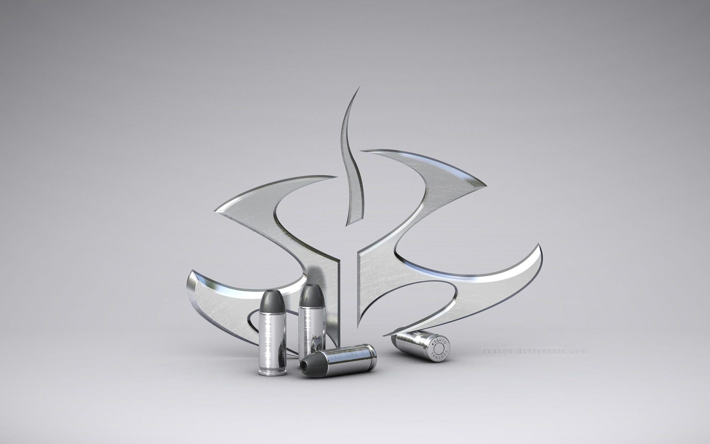
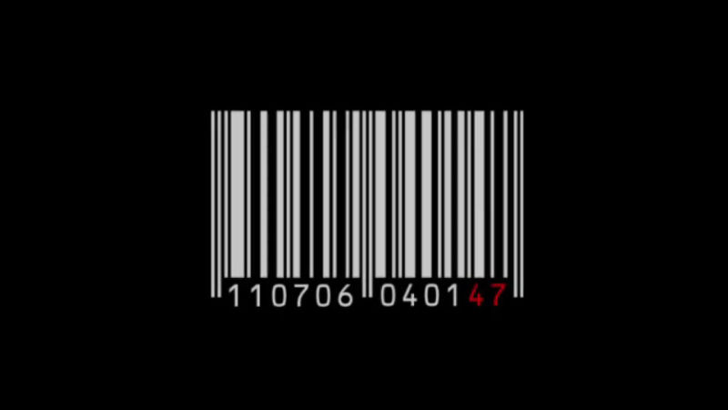

How to Play

Hitman is a Assassin Video Game. A Mission will be given to you and you need to finish that mission without getting spotted. Based on your skills rewars points will be awarded.
Developers

This Game Was develped by a IO Interactive with high-end graphics. It needs 8GB RAM to experience full fun.
Multiplayer
Play Hitman.Compete your score in leaderboard and become the worlds best assassin.
Hitman: Absolution was met with a polarized reception. Most positive comments were concerning the game's graphics, environments and locations, and the varied gameplay options.
However, many critics disliked the game for its linear structure as opposed to the open ended nature of previous installments. As of March 2013, the game has sold over 3.6 million copies
The game introduces an online option to the series, 'Contracts', where players can create their own missions for other players to complete.